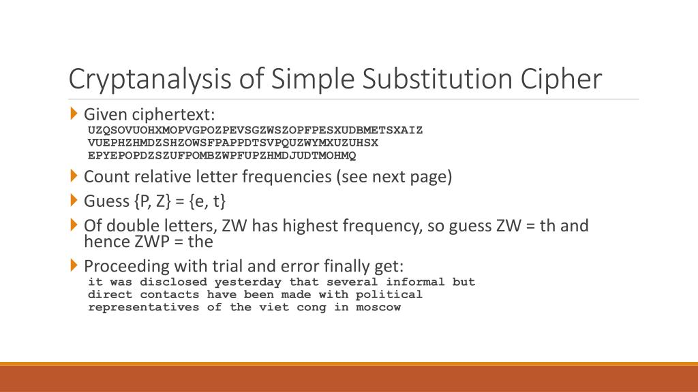
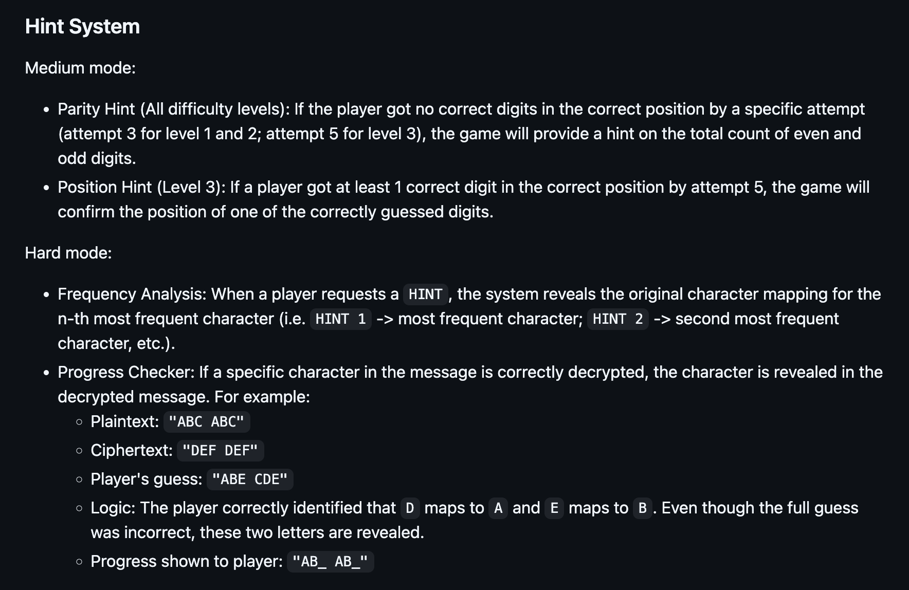

~/cipher-maze
Some notes from building Cipher Maze.
Background
Cipher Maze was the group project for COMP2113. It was to design and build a text-based mini game using C++.
Why cryptography game?
Around the same time, COMP1110 had just introduced some basic concepts in cybersecurity and cryptography.
We learnt about Caesar ciphers, substitution ciphers, and how frequency analysis can be used to decrypt substitution ciphers without knowing the key beforehand.

I found that idea particularly interesting. Even though the text looks completely random at first, patterns in the letters can gradually reveal the original message.
I suggested making cryptography the main theme of our game, while another teammate proposed a fog-of-war exploration mechanic. We eventually combined both ideas into what became Cipher Maze.
Building the game
One feature that was not part of the original plan was the hint system.
During testing, I realized the numeric and substitution cipher puzzles were much more difficult than I had expected. Even I built the substitution cipher part of the game, solving it was not easy. That made me think players would probably have an even harder time.
To make the game more approachable, I implemented a hint system for the medium and hard difficulties. The hints do not reveal the answer directly, but they give players enough information to continue without relying on external tools.

We also discovered a balancing issue during testing. In easy mode, the map was only 3×3, so players could simply walk straight to the exit while ignoring every puzzle and still have enough HP to survive.
After discussing it, we adjusted the damage calculation so players would need to solve at least one puzzle before reaching the end room. It was a small change, but it made the puzzles feel like an essential part of the game instead of something that could be skipped entirely.